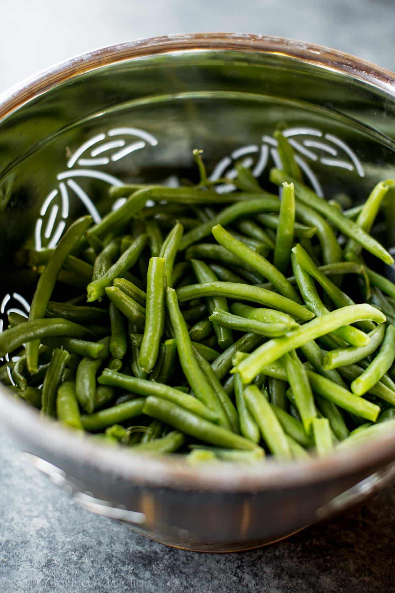

Learn how to make a creamy green bean casserole completely from scratch with real ingredients. This is a family favorite side dish that will put a Thanksgiving turkey to shame!
Green bean casserole is my family’s absolute FAVORITE (and maybe yours too?) and this homemade version blows every other recipe out of the water. Bold statement, right?
Preheat the oven to 475°F: Line a large baking sheet with parchment paper or a silicone baking mat. Set aside.
For the onions: (while the onions bake, you can blanch the green beans– step 4.) Thinly slice the onion. Pour flour in one small bowl, Panko + salt + pepper into a medium bowl, and whisk the egg and milk together in another small bowl. To bread the onion slices, you’ll want to use one hand for dry and one hand for wet. It helps things move a little quicker and easier. First, dip a few slices into the flour. Then into the egg mixture. And finally, give them a nice dunk into the Panko and coat them well. Place onto baking sheet. Repeat with the rest of the onions. Bake onions until golden brown, about 25 minutes. Flip them twice during this time. Set them aside.
Reduce oven to 400°F
Bring a gallon of water and 1 Tablespoon of salt to a boil in a large saucepan. Add the beans and blanch for 5 minutes. Drain and immediately place into a large bowl filled with ice water to stop the cooking process. Drain again and set aside.
For the casserole: Over medium-high heat, melt the butter in a large 10 – 12 inch ovenproof skillet. Add the mushrooms, 1 teaspoon salt, and the pepper. Cook, stirring occasionally, until the mushrooms begin to give off some of their moisture– about 5 minutes. Add the garlic, stir, and cook for another 2 minutes. Sprinkle the flour on top and stir until combined. The flour will soak up all the moisture. Add the chicken broth and simmer for 3 minutes. Decrease the heat to medium-low and add the half-and-half. Stirring occasionally, cook until the mixture is thick– about 10 minutes or maybe more if you prefer a thicker sauce.
Remove from the heat and add 1/4 of the onions and all of the green beans. Give it a nice stir, combining the sauce and beans. Top with remaining onions and bake until bubbly, about 10-15 minutes. Remove from the oven and enjoy! Leftovers keep well in an airtight container in the refrigerator for up to 4 days. Reheat as desired.